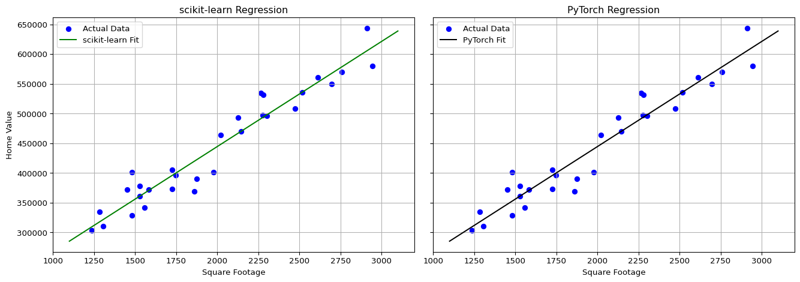

# NumPy
import numpy as np
X = np.array([[1200], [1400], [1600]])
y = np.array([[250000], [275000], [300000]])
print("X =", X)
print("y = ", y)X = [[1200]
[1400]
[1600]]
y = [[250000]
[275000]
[300000]]

According to John D. Kelleher “the field of artificial intelligence was born at a workshop at Dartmouth College in the summer of 1956.”
Machine learning is about enabling computers to recognize patterns in data so they can make accurate predictions or decisions without being explicitly programmed for every scenario. At its core, it involves feeding a model real-world examples encoded in a dataset and allowing the computer to learn the relationship between inputs and outputs. Once trained, the model can apply that learned relationship to make predictions on new, unseen data.
To build a machine learning model, we need four key ingredients:
“Linear” in this context means that the effect of \(x\) on \(\hat{y}\) is proportional and constant: no matter what value of \(x\) we choose, an increase of 1 unit in \(x\) always increases \(\hat{y}\) by exactly \(w_1\) units. This property makes the model highly interpretable.
So what exactly is being learned? The computer is learning the weights (parameters) of the chosen model. This is best understood through an example. We’ll start with the simplest possible machine learning model: simple linear regression. It’s a powerful tool that helps us understand the core ideas behind more complex models, including the ones that power today’s cutting-edge AI systems like ChatGPT.
A simple linear regression model takes a single input variable \(x\) and predicts the value of a corresponding output variable \(y\). For example, the input variable might represent a house’s square footage, and the output variable could represent the value of the home.
We can write down the relationship between square footage and value in the form of a mathematical equation (also called a mathematical function or a model):
\[ y = w_0 + w_1 x \]
Where \(y\) represents the home value and \(x\) represents the square footage.
In machine learning jargon \(w_0\) and \(w_1\) are called the parameters or weights of the model (hence the use of \(w\) in the notation) and describe the nature of the relationship between \(x\) and \(y\). \(w_0\) and \(w_1\) are the numbers that the computer will learn (i.e. derive) based on what is observed in real life which will be encoded into training data discussed in the next section.
In other fields such as econometrics these might be introduced using the greek alphabet notation of \(\alpha\) and \(\beta\).
You might recognize this equation as the equation for a line in slope-intercept from which is often presented as:
\[ y = mx + b \]
where \(x\) and \(y\) are numbers in the coordinate plane with \(m\) representing the slope of the line and \(b\) representing the y-intercept (the point where the line crosses the y-axis) as shown in the image below:

Simple linear regression and the equation of a line are in fact the same mathematical equation. In the context of linear regression, we simply use different notation: \(w_1 = m\) (the slope), and \(w_0 = b\) (the y-intercept which in machine learning is referred to as the bias term).
It’s common for different fields of study to use different notation and words for the same mathematical concepts. Unfortunately this can be one of the biggest sources of confusion for students so we will make an effort to call out these differences throughout the course.
Now that we’ve shown that simple linear regression is actually just the equation of a line where \(w_0\) is the y-intercept and \(w_1\) is the slope we can have a visual picture in mind for how an input variable \(x\) and the output variable \(y\) are related.

What does your intuition tell you about the values \(w_0\) and \(w_1\) are likely to take on once they are estimated in our home value example?
Do you expect them to be positive or negative numbers?
Assume \(x\) was \(0\), what would the equation be telling you?
As soon as we come up with values for \(w_0\) and \(w_1\) have a way predicting values of \(y\) when plugging in any value of \(x\) to the fitted equation.
The goal of machine learning is to learn the best possible values \(w_0\) and \(w_1\) allowing us to make good predictions of a homes value based on it’s square footage. We will soon explore how the computer learns these weight values but to build our intution on what the model does we can start by simply guessing values for the weights. For example, let’s assume:
\[ w_0 = 50,\!000 \quad \text{and} \quad w_1 = 200 \]
Then our function becomes:
\[ \hat{y} = 50,\!000 + 200x \]
We use the notation \(\hat{y}\) (read as “y-hat”) here to emphasize that this is a now predicted value based on the model, not an observed or actual value.
This act of using the trained model to compute a prediction based on an input \(x\) is also called inference since we are inferring an estimated output \(\hat{y}\).
Using this model we can predict that a home with 3,000 square feet will have a value of:
\[ \hat{y} = 50,\!000 + 200 \cdot 3,\!000 = \$650,\!000 \]
Now, consider what the model predicts for a home with 0 square feet:
\[ \hat{y} = 50,\!000 + 200 \cdot 0 = \$50,\!000 \]
This implies that the base value of the property—the land alone, with no house—might be interpreted as $50,000. This is exactly why both \(w_0\) and \(w_1\) are necessary. If we had included only \(w_1 x\) and omitted \(w_0\), the model would always predict 0 for an input of \(x = 0\), which might not reflect the reality (e.g., land still has value).
In machine learning, the term bias is used to refer to this \(w_0\) value. The name comes from the fact that it shifts (or “biases”) the entire output of the model up or down, independent of the input. Geometrically, it determines the \(y\)-intercept of the prediction line. It allows the model to better fit real-world data.
Choosing a different set of weight values would result in a different equation, resulting in a different prediction. For example, assume instead that \(w_0 = 25,000\) and \(w_1 = 300\) resulting in the following equation:
\[ \hat{y} = 25,000 + 300 x \]
This model would predict that the same 3,000 square-foot home has a much higher value of \(\$925,000 = 25,000+300*3,000\).
Let’s assume the $3,000 square foot home we have in mind recently sold for $800,000 reflecting it’s true value (a single instance of \(y\)). We could then compute the error associated with each set of model weights as the asbolute value of the prediction error as follows:
Given these results we might reasonably conclude that the second set of model weights produced the better prediction, since it was less wrong by $25,000.
In machine learning this prediction error is commonly called the model’s loss, that is, how far off the prediction is from the observed truth. The mathematical function by which we compute prediction error is called the loss function. In our case, we could represent our choice of loss function as \(\left| \hat{y} - y \right|\).
There are many possible choices of loss function. For example, we didn’t have to use absolute value, we could have simply taken the difference as our measurement of loss. We will discuss loss functions and introduce the most commonly used loss functions in later sections.
In order for a computer to learn the best weight values for a model, we need to communicate with it in the language it understands: data. In this context, “data” refers to numerical values organized in rows and columns, like a spreadsheet or matrix. Each row is a single example, and each column holds a particular feature or label.
For our home value prediction example, imagine a simple dataset with two columns:
Each row contains both the square footage and the corresponding value for a particular house. Together, each pair of values forms what we call an input-output pair. A complete set of these pairs is called a dataset.
We can write this dataset using the following compact mathematical notation:
\[ \{(x^{(i)}, y^{(i)})\}_{i=1}^n \]
This might look intimidating at first, but it’s just a convenient way of saying:
“We have \(n\) examples. For each example \(i\), we observe an input \(x^{(i)}\) and a corresponding output \(y^{(i)}\).”
Let’s break down the notation a bit further:
If you wrote this out as a table, it might look like this:
| Example (\(i\)) | \(x^{(i)}\) = Square Footage | \(y^{(i)}\) = Home Value |
|---|---|---|
| 1 | 1200 | 250,000 |
| 2 | 1400 | 275,000 |
| 3 | 1600 | 300,000 |
| … | … | … |
| \(n\) | (last example) |
This is the kind of data we use to “train” a machine learning model, by showing it many examples, we give it a chance to learn the relationship between inputs and outputs.
In different fields and contexts, we often use different terms for the same underlying ideas. Here’s a helpful reference for the various names used for inputs and outputs in machine learning and related areas:
| Concept | Common Synonyms | Notes |
|---|---|---|
| Input | Feature, Independent Variable, Predictor, Covariate, Regressor, \(x\) | The value(s) we feed into the model to make a prediction. Can be one variable or many. |
| Output | Label, Target, Dependent Variable, Response, \(y\) | The value the model is trying to predict or learn from. |
| Input-Output Pair | Example, Observation, Data Point, \((x^{(i)}, y^{(i)})\) | A single row of data showing both the input and the correct output. |
| Collection of Examples | Dataset, Training Data, Sample | All the input-output pairs we give to the model to learn from. |
| Predicted Output | Prediction, Estimate, \(\hat{y}\) | The output the model thinks is correct, based on what it learned. |
There are actually four equivalent ways of representing a dataset, each useful in different contexts. You will be greatly aided in your study of machine learning if you can recognize and switch between all four forms with ease. Different textbooks, courses, tutorials and code libraries will use different representations so developing fluency in all of them will help you understand ideas more deeply and communicate more clearly.
It represents the dataset as a collection of \(n\) input-output pairs, where each \(x^{(i)}\) is an input and each \(y^{(i)}\) is the corresponding output. This form is widely used in textbooks and research papers because of its compactness and precision. It’s the language of mathematics, and it’s especially helpful when trying to understand what’s happening under the hood as computer code executes. By using this notation, we can reason more clearly about how models learn and make predictions.
Spreadsheet or Table Format:
This is the most familiar form for most people and is often used in business and statistics. Each row represents an example; each column represents a variable or feature.
| Example (\(i\)) | \(x^{(i)}\) = Input (e.g., SqFt) | \(y^{(i)}\) = Output (e.g., Price) |
|---|---|---|
| 1 | 1200 | 250,000 |
| 2 | 1400 | 275,000 |
| 3 | 1600 | 300,000 |
| … | … | … |
| \(n\) | — | — |
This is also the format used in tools like Excel, Google Sheets, or data frames in Python and R.
Mathematical Matrix Notation:
Matrix notation is a compact and powerful mathematical way to represent an entire dataset, especially when trying to understand what calculations the computer is making while executing machine learning algorithms (discussed in the next section). In matrix form:
If each input has just one feature (like square footage), then \(X\) is simply a single column of numbers (a vector). But if we have more than one input feature, for example, both square footage and number of bedrooms, then \(X\) becomes a matrix with multiple columns, like this:
\[ X = \begin{bmatrix} x_1^{(1)} & x_2^{(1)} \\ x_1^{(2)} & x_2^{(2)} \\ \vdots & \vdots \\ x_1^{(n)} & x_2^{(n)} \end{bmatrix} \]
Here:
This structure easily extends to more features. For example, if we also include number of bathrooms, year built, and lot size, then \(X\) would have 5 columns total (one for each feature).
The output vector \(y\) stays the same regardless of the number of inputs with one value per row, like the price of the home:
\[ y = \begin{bmatrix} y^{(1)} \\ y^{(2)} \\ \vdots \\ y^{(n)} \end{bmatrix} \]
Matrix notation lets us express model computations in a compact, efficient form that computers can execute quickly.
It will be essential when we scale up to more than input feature. It illustrates how a machine thinks. It’s ideal for: - Handling many examples and features - Performing vectorized calculations like dot products and gradients - Writing models in clean, code-friendly format
Matrix notation makes your reasoning and implementation faster, clearer, and more powerful. We’ll use it throughout the course.
Code Representation (Arrays or Tensors):
When implementing models in code, we typically use arrays (Python’s NumPy package) or tensors (Python’s PyTorch package) which are data structures that store values in memory for numerical computation.
Below is an example with NumPy
# NumPy
import numpy as np
X = np.array([[1200], [1400], [1600]])
y = np.array([[250000], [275000], [300000]])
print("X =", X)
print("y = ", y)X = [[1200]
[1400]
[1600]]
y = [[250000]
[275000]
[300000]]So what does this mean?
X is a matrix of inputs (in this case, just one feature: square footage).y is a vector of outputs (the target values, like home prices).y matches the corresponding row in X.Let’s now connect this code back to the set and matrix representations of a dataset.
Equivalence with Set Notation
In set notation this tiny dataset could be represented as three input-output pairs:
\[ \{(x^{(i)}, y^{(i)})\}_{i=1}^3 \] More specifically:
Each pair \((x^{(i)}, y^{(i)})\) is represented by a row in X and the corresponding row in y.
Equivalence with Matrix Notation
We can also see how this toy dataset would be written in matrix notation as a pair of matrices, one for the inputs and one for the outputs:
\[ X = \begin{bmatrix} x_1^{(1)} \\ x_1^{(2)} \\ x_1^{(3)} \end{bmatrix} = \begin{bmatrix} 1200 \\ 1400 \\ 1600 \end{bmatrix}, \quad y = \begin{bmatrix} y^{(1)} \\ y^{(2)} \\ y^{(3)} \end{bmatrix} = \begin{bmatrix} 250{,}000 \\ 275{,}000 \\ 300{,}000 \end{bmatrix} \]
PyTorch Example
Lastly, below we represent the same toy dataset using PyTorch, currently the most popular deep learning library, and the one used to develop many modern large language models (LLMs).
PyTorch uses a data structure called a tensor.
A tensor is a generalization of familiar objects like scalars, vectors, and matrices:
5)[1200, 1400, 1600])Increasing the tensor dimension allows us to compactly describe multiple sets of structured data and for a computer to perform parallel computations efficiently which is essential when training modern LLMs.
In theory, there is no limit on the number of dimensions a tensor can have.
In practice, we won’t need more than 4D tensors to build modern large language models (LLMs).
For simple models like linear regression, a 2D tensor (i.e., a matrix) is sufficient to represent the data.
Below we illustrate the same toy data set using a PyTorch tensor.
import torch
# Input data: square footage (in one column)
X = torch.tensor([[1200.], [1400.], [1600.]])
# Output data: home prices
y = torch.tensor([[250000.], [275000.], [300000.]])
print("X (inputs):")
print(X)
print("\ny (outputs):")
print(y)X (inputs):
tensor([[1200.],
[1400.],
[1600.]])
y (outputs):
tensor([[250000.],
[275000.],
[300000.]])The dot (.) at the end of the numbers (like 1200. or 250000.) indicates that the numbers are being treated as floating point numbers (i.e., float type) rather than integers. A floating point number is a number that can represent decimal values on a computer, in contrast to an integer, which can only represent whole numbers. PyTorch models expect inputs and outputs to be floating point numbers because most model operations involve decimals.
Let’s now plot a larger dataset and visualize the line of best fit
import numpy as np
import matplotlib.pyplot as plt
import torch
import torch.nn as nn
import torch.optim as optim
from sklearn.linear_model import LinearRegression
from sklearn.preprocessing import StandardScaler
# --- Set Seed for Reproducibility ---
np.random.seed(42)
torch.manual_seed(42)
# --- Randomly Generate Data ---
n_samples = 30
X_data = np.random.uniform(1200, 3000, size=(n_samples, 1)).astype(np.float32)
true_slope = 200
true_intercept = 50000
noise = np.random.normal(0, 30000, size=(n_samples, 1)).astype(np.float32)
y_data = true_intercept + true_slope * X_data + noise
# --- scikit-learn Model ---
scaler = StandardScaler()
X_scaled = scaler.fit_transform(X_data)
lr_model = LinearRegression()
lr_model.fit(X_scaled, y_data)
# Convert scikit-learn model back to original units
slope_sk = lr_model.coef_[0][0] / scaler.scale_[0]
intercept_sk = lr_model.intercept_[0] - slope_sk * scaler.mean_[0]
# --- PyTorch Model ---
X_torch = torch.tensor(X_data)
y_torch = torch.tensor(y_data)
X_mean = X_torch.mean()
X_std = X_torch.std(unbiased=False)
X_scaled_torch = (X_torch - X_mean) / X_std
model = nn.Linear(1, 1)
optimizer = optim.SGD(model.parameters(), lr=0.01)
loss_fn = nn.MSELoss()
for _ in range(3000):
y_pred = model(X_scaled_torch)
loss = loss_fn(y_pred, y_torch)
optimizer.zero_grad()
loss.backward()
optimizer.step()
# Convert PyTorch model back to original units
slope_torch = model.weight.item() / X_std.item()
intercept_torch = model.bias.item() - slope_torch * X_mean.item()
# --- Plot ---
X_plot = np.linspace(1100, 3100, 100).reshape(-1, 1)
y_sk = intercept_sk + slope_sk * X_plot
y_pt = intercept_torch + slope_torch * X_plot
fig, axes = plt.subplots(1, 2, figsize=(14, 5), sharey=True)
# Plot scikit-learn
axes[0].scatter(X_data, y_data, label="Actual Data", color="blue")
axes[0].plot(X_plot, y_sk, label="scikit-learn Fit", color="green")
axes[0].set_title("scikit-learn Regression")
axes[0].set_xlabel("Square Footage")
axes[0].set_ylabel("Home Value")
axes[0].legend()
axes[0].grid(True)
# Plot PyTorch
axes[1].scatter(X_data, y_data, label="Actual Data", color="blue")
axes[1].plot(X_plot, y_pt, label="PyTorch Fit", color="black")
axes[1].set_title("PyTorch Regression")
axes[1].set_xlabel("Square Footage")
axes[1].legend()
axes[1].grid(True)
plt.tight_layout()
plt.show()
In the example above, we assumed \(w_0 = 50,000\) and \(w_1 = 200\) for illustation. We now turn attention to how a machine (i.e., a computer) is capable of learning the optimal weight values, enabling the mathematical model to make the most accurate predictions possible which explains which strikes at the heart of why the field is called called machine learning.
There are four main ingredients necessary for the computer to learn the best possible model weights:
A proposed mathematical structure: For simple linear regression the mathematical structure (i.e., equation) is \(y = w_0 + w_1 x\). This equation defines the form of the relationship between inputs(s) and output(s). This structure assumes a linear relationship between the input \(x\) and output \(y\). Later in the course, we will explore the more complex non-linear models called neural networks which are used in large language models.
Training Data —
If you’re coming from econometrics, you’re probably used to indexing observations using subscripts, like \(x_i\) and \(y_i\). In machine learning, we typically use superscripts, like \(x^{(i)}\) and \(y^{(i)}\), to denote the \(i\)-th training example.
Why the change?
Machine learning models often work with vectors of features where \(x\) is understood not as single input variable but as a vector of input variables:
\[ x^{(i)} = \begin{bmatrix} x_1^{(i)} \\ x_2^{(i)} \\ \vdots \\ x_d^{(i)} \end{bmatrix} \]
Here:
Using subscripts for both observations and features (e.g., \(x_i\) and \(x_j\)) would lead to confusion.
So while this might feel unfamiliar at first, superscript indexing is standard in ML to keep feature and example indexing clearly separated.
\[ \mathcal{L}(w_0, w_1) = \frac{1}{n} \sum_{i=1}^n (w_0 + w_1 x^{(i)} - y^{(i)})^2 = \frac{1}{n} \sum_{i=1}^n (\hat{y}^{(i)} - y^{(i)})^2 \]
This is called the Mean Squared Error (MSE) loss function, and it helps us measure how good or bad our model’s predictions are.
The big curly \(\mathcal{L}\) is a stylized version of the capital Latin letter L. In this context, \(\mathcal{L}\) stands for “Loss” or sometimes “Loss function.”
This function tells us how well our model is performing overall. A smaller value means our predictions on average are close to the true values, and a larger value means on average we’re making bigger mistakes.
Our goal is to find the values of \(w_0\) and \(w_1\) that make this loss function as small as possible, with for simpple linear regression equates to finding the line of best-fit through our data.
Understanding these mappings will help you bridge the language used in machine learning and econometrics and navigate both literatures more fluently.
In our example, training data,
machine learning algorithm
parameters or “weights”
(read as y-hat, the “hat” signifies that a prediction is being made. Writing \(y\) without the “hat” would mean no prediction has yet been attempted).
uch as a zestimate from Zillow
Simple Linear Regression
parameters or “weights”
training data,
machine learning algorithm
inference
supervised machine learning
Epoch
To bring this to life, let’s consider a concrete where we’d like to predict the price of a home.
Let:
Suppose we have fit a linear model to a dataset and obtained:
\[ \hat{y} = 50 + 0.2 x \]
This means: - The base price of any house (intercept) is $50,000. - For each additional square foot, the price increases by $200.
For a house that is 1,000 square feet:
\[ \hat{y} = 50 + 0.2 \cdot 1000 = 250 \]
So, the model predicts a price of $250,000 for a 1,000 square foot house.
The model approximates an unknown true function: \[ y = f^*(x) + \varepsilon \] where \(\varepsilon\) is the irreducible error.
The residuals measure the difference between actual and predicted values: \[ e_i = y_i - \hat{y}_i \]
To measure model performance: \[ \mathcal{L}(w_0, w_1) = \frac{1}{n} \sum_{i=1}^n (y_i - \hat{y}_i)^2 \]
With \(n\) observations, the design matrix includes a bias term: \[ \mathbf{X} = \begin{bmatrix} 1 & x_1 \\ 1 & x_2 \\ \vdots & \vdots \\ 1 & x_n \end{bmatrix} \]
We can directly compute the optimal weights: \[ \mathbf{w} = (\mathbf{X}^\top \mathbf{X})^{-1} \mathbf{X}^\top \mathbf{y} \]
When a closed-form is not used, we apply an iterative optimization: \[ w_j \leftarrow w_j - \eta \frac{\partial \mathcal{L}}{\partial w_j} \]
With gradients: \[ \frac{\partial \mathcal{L}}{\partial w_j} = -\frac{2}{n} \sum_{i=1}^n x_{ij}(y_i - \hat{y}_i) \]
A loss function is a mathematical function that measures the difference between a model’s predicted output and the true target value from a training dataset. It produces a scalar value representing the error for a single data point or the average error over a batch.
Cross entropy loss: “cross entropy” and “negative average log probability” related and often used interchangeably in practice.”
Perplexity: “Perplexity is a measure often used alongside cross entropy loss to evaluate the performance of models in tasks like language modeling.”
Different disciplines often use different terms for the same concepts. Here’s a helpful guide:
| Concept | Machine Learning | Statistics / Econometrics |
|---|---|---|
| Single data point (e.g., a row in a spreadsheet) | Training example | Observation, Case |
| Input features | Features, Inputs | Independent variables, Regressors, Covariates, Predictors |
| Target output | Label, Target, Output | Dependent variable, Response |
| Collection of data points | Training set, Training data | Sample, Dataset |
| Parameter | Weight (e.g., \(w_1\)) | Coefficient (e.g., \(\beta_1\)) |
| Model prediction | \(\hat{y}\) | Fitted value, Predicted value |
| Loss function | Loss | Objective function, Criterion function |
| Learn model parameters | Training, Fitting | Estimation |
Understanding these parallels can make it much easier to bridge terminology between fields as you move through the course.
Supervised Learning (Regression) Use Cases
| Use Case | Sample Inputs | Model Output Description | What ML Question is Being Answered? | What Business Question is Being Answered? | Example Algorithm(s) |
|---|---|---|---|---|---|
| Price Prediction | Property size, location, features | Numeric price | What is the expected price of this item? | How should I price products to stay competitive and profitable? | Linear Regression, CatBoost |
| Demand Forecasting | Historical sales, promotions, holidays | Predicted sales volume | What will sales be next week/month? | How can I manage inventory or staffing to meet demand? | Linear Regression, LSTM |
| Medical Risk Score | Patient vitals, history | Risk score (e.g., probability of event) | How likely is a medical event to occur? | How should I prioritize preventive care for patients? | Random Forest, Ridge Reg. |
| Revenue Forecasting | Past financials, seasonality | Revenue over next time period | How much revenue will we make? | How can I allocate budgets or set growth targets? | Time Series Models, XGBoost |
| Energy Usage Estimation | Time of day, weather, appliance use | Predicted energy consumption | How much energy will be used in this period? | How should I manage power supply or optimize grid efficiency? | Linear Regression, SVR |
Supervised Learning (Classification) Use Cases
| Use Case | Sample Inputs | Model Output Description | What ML Question is Being Answered? | What Business Question is Being Answered? | Example Algorithm(s) |
|---|---|---|---|---|---|
| Email Spam Detection | Email content, sender info, subject line | Binary label: spam or not spam | Is this email spam? | How can I prevent unwanted emails from reaching users’ inboxes? | Logistic Regression, SVM |
| Credit Risk Scoring | Income, credit history, employment data | Risk category (e.g., low/medium/high) | Will this applicant default? | Should I approve this loan, and at what interest rate? | Decision Tree, XGBoost |
| Image Classification | Pixel values from an image | Object class label (e.g., “cat”, “dog”) | What object is in this image? | How can I organize photos or automate product tagging? | CNNs, ResNet |
| Sentiment Analysis | Review text, social media posts | Sentiment label (positive/negative) | What sentiment is being expressed? | What is the public opinion about my product or brand? | Naive Bayes, BERT |
| Disease Diagnosis | Symptoms, test results, demographics | Disease class (e.g., flu, COVID, none) | What condition does this patient likely have? | How can I assist doctors in making accurate and timely diagnoses? | Random Forest, Neural Nets |
| Use Case | Sample Inputs | Model Output Description | What ML Question is Being Answered? | What Business Question is Being Answered? | Example Algorithm(s) |
|---|---|---|---|---|---|
| Customer Segmentation | Age, income, purchase history | Cluster/group labels for each customer | What types of customers exist in my data? | How can I tailor marketing strategies to different customer types? | K-means, DBSCAN |
| Topic Modeling | Articles or documents | Topics with keywords per document | What topics are being discussed? | What content themes resonate most with my audience or market? | LDA, NMF |
| Anomaly Detection | Transaction logs, sensor data | Anomaly score or binary flag | Which data points are unusual? | Are there fraudulent transactions or system failures I need to act on? | Isolation Forest, Autoencoder |
| Dimensionality Reduction | High-dimensional features (e.g., pixels) | 2D or 3D projections for analysis or visualization | How can I reduce feature space while preserving info? | How can I visualize or simplify complex data for human analysis or modeling? | PCA, t-SNE, UMAP |
| Market Basket Analysis | Sets of purchased items | Association rules (A & B → C) | What items co-occur frequently in purchases? | Which product bundles or cross-sell offers should I promote? | Apriori, FP-Growth |
| Word Embedding | Text corpus | Word vectors capturing semantic similarity | What are the contextual relationships between words? | How can I build a smarter search engine or chatbot that understands language context? | Word2Vec, GloVe |
| Image Compression | Raw pixel arrays | Compressed version of the image | How can I represent this image with fewer features? | How can I reduce storage or transmission costs for image data? | Autoencoders |
| Use Case | Sample Inputs | Model Output Description | What ML Question is Being Answered? | What Business Question is Being Answered? | Example Algorithm(s) |
|---|---|---|---|---|---|
| Game Playing | Game state (e.g., board, score) | Action to take | What should I do to win the game? | How can I build an AI that outperforms humans or creates adaptive gameplay? | Q-learning, DQN |
| Robotics & Control | Sensor data (angles, velocities, etc.) | Movement or control signals | How should the agent move next to reach a goal? | How can I automate physical tasks like picking, sorting, or navigating? | PPO, SAC, DDPG |
| Autonomous Vehicles | Sensor input (camera, LIDAR, speed, GPS) | Driving action | What’s the optimal next driving move? | How can I develop a safe and efficient self-driving vehicle system? | Deep RL + sensor fusion |
| Recommendation Systems | User history, preferences, session behavior | Recommended item | What should I recommend next? | How can I increase user retention, engagement, or sales? | Contextual Bandits, RL |
| Portfolio Management | Financial indicators, stock prices | Asset allocation decision | How should I invest to maximize return? | How can I build an automated trading or portfolio optimization system? | Actor-Critic methods |
| Personalized Education | Student progress and quiz results | Next learning step | What lesson or content should come next? | How can I boost student outcomes by personalizing learning pathways? | Multi-armed bandits |
| Healthcare Treatment | Patient history and vitals | Treatment or intervention strategy | What care plan maximizes long-term patient health? | How can I optimize healthcare outcomes while reducing costs and readmissions? | Off-policy RL, POMDPs |
Supervised Learning: “Here’s the question and the right answer.”
Unsupervised Learning: “Here is some data, can you find patterns and/or organize it in a meaningful way?”
Reinforcement Learning: “You’re an agent playing a, figure out the best strategy through trial and error, using only points (rewards) as feedback.”
“During training, a machine learning algorithm processes a dataset and chooses the function that best matches the patterns in the data.”
supervised, unsupervised, and reinforcement.
Supervised learning is the most widely used type of machine learning and significantly overlaps with the methodologies of other quantitative fields, such as statistics and econometrics.
Supervised learning gets its name from the fact that the input data set has examples of both inputs and outputs.
The outputs are called labels, hence you will sometime hear the term “labeled dataset.”
logistic (sigmoid) function:
Softmax: